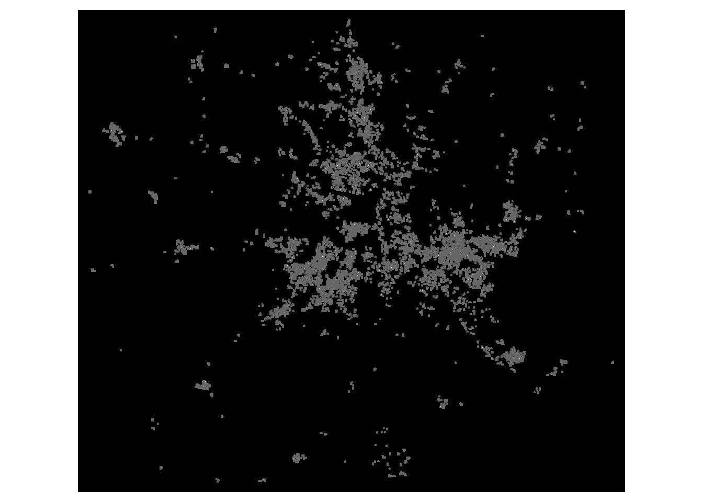
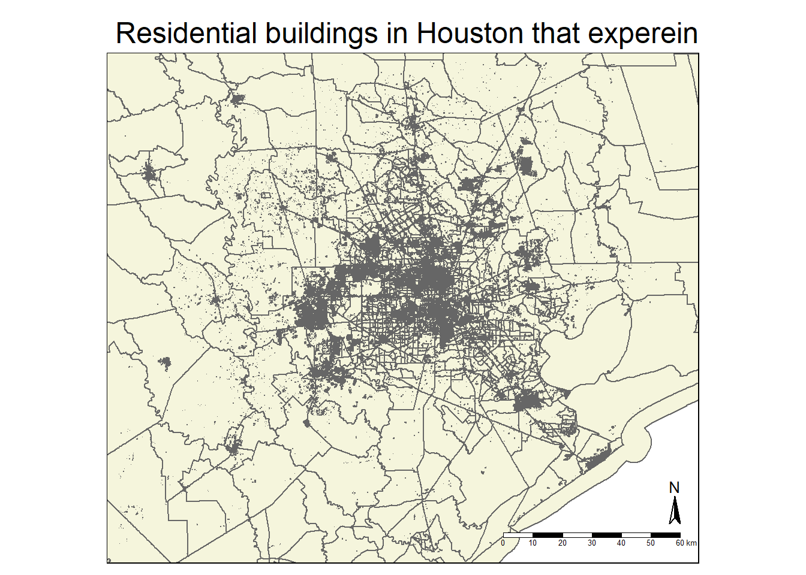

Code
# Load packages
library(sf)
library(stars)
library(tmap)
library(here)
library(tidyverse)
library(kableExtra)
library(testthat)
library(spData)
library(spDataLarge)
library(geodata)
library(raster)# Load packages
library(sf)
library(stars)
library(tmap)
library(here)
library(tidyverse)
library(kableExtra)
library(testthat)
library(spData)
library(spDataLarge)
library(geodata)
library(raster)# Read in Houston road data
# Exclude data that doesn't include highways
roads <- read_sf(here("data", "data","gis_osm_roads_free_1.gpkg"), query = "SELECT * FROM gis_osm_roads_free_1 WHERE fclass='motorway'", quiet = TRUE)
# Read in Houston house data
# Exclude non-residential buildings
houses <- read_sf(here("data", "data", "gis_osm_buildings_a_free_1.gpkg"), query = "SELECT *
FROM gis_osm_buildings_a_free_1
WHERE (type IS NULL AND name IS NULL)
OR type in ('residential', 'apartments', 'house', 'static_caravan', 'detached')", quiet = TRUE)
# Read in Texas census data
tx_census <- st_read(here("data","data", "ACS_2019_5YR_TRACT_48_TEXAS.gdb"), layer = "ACS_2019_5YR_TRACT_48_TEXAS", quiet = TRUE)
# Read in Texas census tract and income data
tx_income <- st_read(here("data","data", "ACS_2019_5YR_TRACT_48_TEXAS.gdb"), layer = "X19_INCOME", quiet = TRUE)
# Read in nightlight data
# Data for 2021-02-07
nightlight_07_05 <- read_stars(here("data", "data","VNP46A1", "VNP46A1.A2021038.h08v05.001.2021039064328.tif"))
nightlight_07_06 <- read_stars(here("data", "data", "VNP46A1", "VNP46A1.A2021038.h08v06.001.2021039064329.tif"))
# Data for 2021-02-16
nightlight_16_05 <- read_stars(here("data", "data", "VNP46A1", "VNP46A1.A2021047.h08v05.001.2021048091106.tif"))
nightlight_16_06 <- read_stars(here("data", "data", "VNP46A1", "VNP46A1.A2021047.h08v06.001.2021048091105.tif"))# Make a warning message to ensure CRS is the same across all geo-data frames
check_df_crs <- function() {
df_crs_comparisons <- list( # Create a named list with comparisons
"roads vs houses" = st_crs(roads) == st_crs(houses),
"roads vs tx_census" = st_crs(roads) == st_crs(tx_census),
"houses vs tx_census" = st_crs(houses) == st_crs(tx_census),
"nightlight_07_05 vs nightlight_07_06" = st_crs(nightlight_07_05) == st_crs(nightlight_07_06),
"nightlight_07_05 vs nightlight_16_05" = st_crs(nightlight_07_05) == st_crs(nightlight_16_05),
"nightlight_07_05 vs nightlight_16_06" = st_crs(nightlight_07_05) == st_crs(nightlight_16_06)
)
# Identify results that are FALSE by comparison name
false_comparisons <- names(df_crs_comparisons)[!unlist(df_crs_comparisons)]
if (length(false_comparisons) == 0) {
print("All CRS match. ")
} else {
warning(paste(paste(false_comparisons, "CRS projections do not match.", collapse = " ")))
}
}
# Call warning function
check_df_crs()# Change the CRS of roads and tx_income to match tx_census and houses
tx_census <- st_transform(tx_census, crs = st_crs(houses))
roads <- st_transform(roads, crs = st_crs(houses))
#tx_income <- st_transform(tx_income, crs = st_crs(houses))
# Call warning function again to ensure transformation worked
check_df_crs()[1] "All CRS match. "# Combine the raster data to show all of Houston for the 7th
lights_07 <- st_mosaic(nightlight_07_05, nightlight_07_06)
# Combine the raster data to show all of Houston for the 16th
lights_16 <- st_mosaic(nightlight_16_05, nightlight_16_06)# Make a map of the light intensity before the storm
plot(lights_07, main = "Light intensity of Houston Feb. 7th, 2021")
# Make a map of the light intensity before the storm
plot(lights_16, main = "Light intensity of Houston Feb. 16th, 2021")
# Find the change in light intensity between the two days
lights_diff <- lights_16 - lights_07# Set all cells with values less than 200 to NA, add labels
blackout <- cut(lights_diff, c(200, Inf), labels = 'blackout')# Make a mask by vectorizing to make it a spatial feature
blackout_vector <- st_as_sf(blackout) %>%
st_make_valid() # Fix invalid geometries# Define the spatial parameters of the Houston area
houston_coords <- cbind(x = c(-96.5, -96.5, -94.5, -94.5, -96.5),
y = c(29, 30.5, 30.5, 29, 29))
# Turn these coordinates into a polygon
houston_box <- st_sfc(st_polygon(list(houston_coords)), crs = 4326)
# Make a mask for the Houston area
houston_mask <- st_intersects(blackout_vector, houston_box, sparse = FALSE) # Keep all values
# Use the blackout_vector to show the the Houston area that had blackouts
houston_blackout <- blackout_vector[houston_mask,]
# Change the CRS to match the other Texas data sets
houston_blackout <- st_transform(houston_blackout, crs = 3083)# Transform the cropped data to vector objects (polygons)
#lights_croppped_vec <- as.polygons(lights_cropped) %>%
# st_as_sf() %>%
# st_make_valid() # Change the CRS to EPSG:3083
#lights_cropped_vec <- st_transform(lights_croppped_vec, crs = "EPSG:3083")tm_shape(houston_blackout) +
tm_polygons() +
tm_layout(legend.outside = TRUE, bg.color = "black")
Exclude highways from the cropped blackout mask
# Make a variable for the CRS of the Houston lights dataset
#crs_lights_cropped <- st_crs(lights_cropped_vec)
# Match this CRS variable with the roads dataset
roads <- st_transform(roads, crs = st_crs(houston_blackout))# Test that the units of roads are already in meters
if (st_crs(roads)$units == "m") {
print("Units are in meters.")
} else {
stop("The units are not in meters.")
}[1] "Units are in meters."# Make a buffer of 200m to exclude highways and the surrounding areas
roads_buffer_200 <- st_buffer(roads, dist = 200) %>%
st_union()
# Unionize the polygons into one object and make it valid
#roads_buffer_union <- st_union(roads_buffer_200) %>%
#st_make_valid() %>%
# st_as_sf()# Find the area that had blackouts that are further than 200m from a highway
lights_hwy_buffer <- st_difference(houston_blackout, roads_buffer_200)Identify homes that experienced blackouts by combining the locations of homes and blackouts
# Test that the units of roads are already in meters
if (st_crs(houses) == st_crs(lights_hwy_buffer)) {
print("CRS match")
} else {
houses <- st_transform(houses, crs = st_crs(lights_hwy_buffer))
}
blackout_houses <- st_join(houses, lights_hwy_buffer, join = st_intersects)
# Find the number of residential buildings that suffered a blackout
number_residential_blackout <- nrow(blackout_houses)
print(paste("An estimated", number_residential_blackout, "residential buildings in Houston suffered a blackout during the storms in February, 2021."))[1] "An estimated 480700 residential buildings in Houston suffered a blackout during the storms in February, 2021."# Make a map of the homes in in Houston that lost power
blackout_houses_map <- tm_shape(tx_census, bbox = houston_box)+
tm_polygons(col = "beige")+
tm_shape(blackout_houses) +
tm_polygons(col= "red") +
tm_compass(size = 1.5,
position = c("RIGHT","bottom")) +
tm_scale_bar(lwd = 0.5,
text.size = .4,
position = c("RIGHT","bottom")) +
tm_layout(main.title = "Residential buildings in Houston that expereinced blAckouts")
print(blackout_houses_map)
# Make a test map that shows the new light map with a highway buffer
#lights_hwy_buffer_map <- tm_shape(blackout_houses) +
# tm_polygons() +
# tm_layout(legend.outside = TRUE, bg.color = "black")# Make a test map that shows the light map for the Houston area to compare the two
#lights_cropped_map <- tm_shape(lights_cropped_vec) +
# tm_polygons() +
# tm_layout(legend.outside = TRUE, bg.color = "black")
#tmap_arrange(lights_cropped_map, lights_hwy_buffer_map, ncol = 2)Identify homes that experienced blackouts by combining the locations of homes and blackouts
## Test the CRS here
#st_crs(lights_hwy_buffer) == st_crs(houses)
# Reconcile the CRS of the houses data and the buffered hwy light data
# Make a variable of the CRS for the buffered hwy light data
#crs_lights_hwy_buffer <- st_crs(lights_hwy_buffer)
# Set the houses CRS to this variable
#houses <- st_transform(houses, crs = crs_lights_hwy_buffer)# Make an list of indices of the rows from 'houses' that intersect with the 'lights_hwy_buffer' data frame
#blackout_houses_index <- st_intersects(lights_hwy_buffer, houses)# Convert index list to a vector of indices
#blackout_houses_index <- blackout_houses_index %>%
# unlist() %>%
# unique() # Remove duplicate values if present# Make a subset dataframe of 'houses' using the corresponding values from the index vector
#blackout_houses_OLD <- houses[blackout_houses_index, ]Identify the census tracts likely impacted by blackout
# Make a data frame that contains median income data and geoID
tx_median_income <- tx_income %>%
dplyr::select(B19013e1, GEOID) %>%
rename(median_income = B19013e1, # Column or median income found in metadata
GEOID_Data = GEOID) # Rename column so there is a common column in tx_census
# Combine the Texas income data to Texas census tract data
tx_income_census <- left_join(tx_census, tx_median_income, by = "GEOID_Data")
# Test that the CRS of tx_income_census matches the CRS of blackout_houses and transform if false
if (st_crs(tx_income_census) == st_crs(blackout_houses)) {
print("CRS match")
} else {
tx_income_census <- st_transform(tx_income_census, crs = st_crs(blackout_houses))
}
# Join the Texas census tract data with residential buildings affected by blackouts
tx_census_blackouts <- st_filter(tx_income_census, blackout_houses) # Create a table for my citations
citations_df = tibble::tribble(
~Data,
~Accesssed,
~Link,
"Mapping Inequality, Digital Scholarship Lab at the University of Richmond.", "Accessed 10/21/24", "[https://dsl.richmond.edu/panorama/redlining/data](https://dsl.richmond.edu/panorama/redlining/data)",
"Geodatabase of State EJScreen Data at the Block Group Level.", "Accessed 10/14/24", "[https://www.epa.gov/ejscreen/download-ejscreen-data](https://www.epa.gov/ejscreen/download-ejscreen-data)",
"Global Biodiversity Information Facility.", "Accessed 10/14/23",
"[https://www.gbif.org/](https://www.gbif.org/)"
)
knitr::kable(citations_df,
caption = "Data Citations")| Data | Accesssed | Link |
|---|---|---|
| Mapping Inequality, Digital Scholarship Lab at the University of Richmond. | Accessed 10/21/24 | https://dsl.richmond.edu/panorama/redlining/data |
| Geodatabase of State EJScreen Data at the Block Group Level. | Accessed 10/14/24 | https://www.epa.gov/ejscreen/download-ejscreen-data |
| Global Biodiversity Information Facility. | Accessed 10/14/23 | https://www.gbif.org/ |